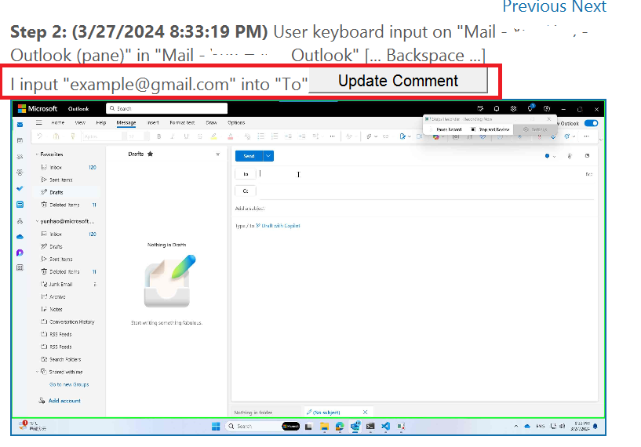

Provide Human Demonstrations to the AppAgent
Users or application developers can provide human demonstrations to the AppAgent to guide it in executing similar tasks in the future. The AppAgent uses these demonstrations to understand the context of the task and the steps required to execute it, effectively becoming an expert in the application.
How to Prepare Human Demonstrations for the AppAgent?
Currently, UFO supports learning from user trajectories recorded by Steps Recorder integrated within Windows. More tools will be supported in the future.
Step 1: Recording User Demonstrations
Follow the official guidance to use Steps Recorder to record user demonstrations.
Step 2: Add Additional Information or Comments as Needed
Include any specific details or instructions for UFO to notice by adding comments. Since Steps Recorder doesn't capture typed text, include any necessary typed content in the comments as well.

Step 3: Review and Save the Recorded Demonstrations
Review the recorded steps and save them to a ZIP file. Refer to the sample_record.zip for an example of recorded steps for a specific request, such as "sending an email to example@gmail.com to say hi."
Step 4: Create an Action Trajectory Indexer
Once you have your demonstration record ZIP file ready, you can parse it as an example to support RAG for UFO. Follow these steps:
# Assume you are in the cloned UFO folder
python -m record_processor -r "<your request for the demonstration>" -p "<record ZIP file path>"
- Replace
<your request for the demonstration>with the specific request, such as "sending an email to example@gmail.com to say hi." - Replace
<record ZIP file path>with the full path to the ZIP file you just created.
This command will parse the record and summarize it into an execution plan. You'll see a confirmation message similar to the following:
Here are the plans summarized from your demonstration:
Plan [1]
(1) Input the email address 'example@gmail.com' in the 'To' field.
(2) Input the subject of the email. I need to input 'Greetings'.
(3) Input the content of the email. I need to input 'Hello,\nI hope this message finds you well. I am writing to send you a warm greeting and to wish you a great day.\nBest regards.'
(4) Click the Send button to send the email.
Plan [2]
(1) ***
(2) ***
(3) ***
Plan [3]
(1) ***
(2) ***
(3) ***
Would you like to save any one of them as a future reference for the agent? Press [1] [2] [3] to save the corresponding plan, or press any other key to skip.
Press 1 to save the plan into its memory for future reference. A sample can be found here.
You can view a demonstration video below:
How to Use Human Demonstrations to Enhance the AppAgent?
After creating the offline indexer, refer to the Learning from User Demonstrations section for guidance on how to use human demonstrations to enhance the AppAgent.